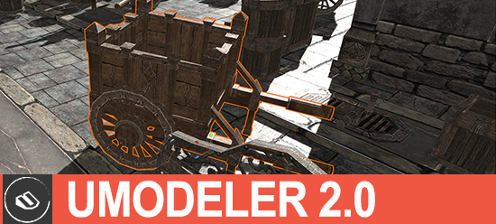
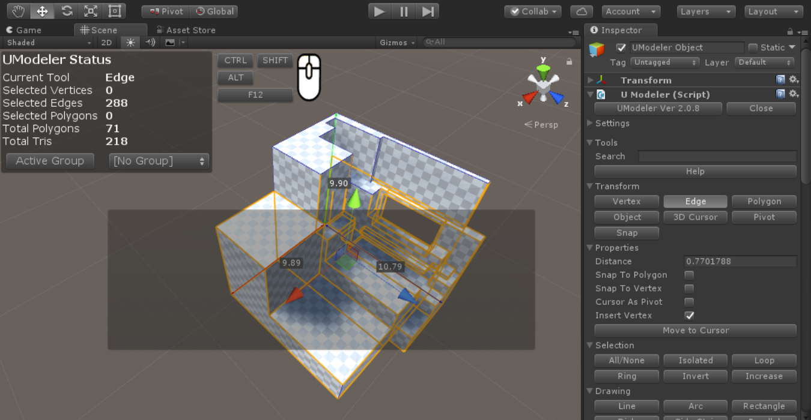

UModeler 2.0¶

Version 2.1.1¶
- Feature : Edge/Polygon Tranform - Added Extrusion fuctions holding
SHIFT.- Enhancement : Vertex/Edge/Polygon Selection - Added
Select only visibleproperty to selects non occluded elements from a camera.- Enhancement : Multi PushPull - Changed a helper line to an arrow.
- Enhancement : Multi PushPull - Added One step push/pull.
- Enhancement : Multi PushPull - Added Vertex Normal type extrusion.
- Tweak : Multip PushPull -
Individualin PushPull type has been renamed toIndividual Polygon- Tweak : Removed
Game Objecttool and RenamedCollider ObjecttoNew UModelerin Misc group.- Feature : UVTool - Added
Exporttool to export uv outlines to .png file.
Version 2.1.0¶
- Feature : Export/import button in the Preference window to export/import shortcuts and general settings as a xml format.
- Enhancement : Collider tool - Added Assign Mesh button to assign the current mesh to the mesh collider.
- BugFix : Ballooned gizmos when scale in transform component has been changed.
- BugFix : Not coming back to the previous mesh immediately after canceling action by pressing ESC
Version 2.0.9¶
- Feature : Added “Triangulate” in the menu
- Enhancement : Inset tool - Enabling an inset from a hole.
- Enhancement : UModelerizing probuilder mesh. After converting, probuilder specific components are removed.
- BugFix : Keeping Polygon mode after using Combine tool or Flatten tool.
- BugFix : Spammed warning messages displayed while typing numbers in the inspector after transfoming/extruding.
Version 2.0.8¶

- Feature : Added a new tool - Polygon Group Tool. (See this)
- Fix : Some incorrect colors on Pro skin.
Version 2.0.7¶
- Feature : Advanced menu tooltips.
- Feature : Added
Helpbutton at the top of tools in the Inspector to show Online Manual- Feature : Added Color settings in Preferences. (See this)
- Enhancement : Shortcut Settings in Preferences - Modifiers’ list box has been replaced with 3 toggle boxes (
Shfit,CtrlandAlt) (See this)- Documentation : 3D Cursor Tool (See this)
- Documentation : Pivot Tool (See this)
- Documentation : Snap Tool (See this)
- Fix : Material Tool - Added codes to deal with null material.
- Fix : Error of invalid selected polygon display.
Version 2.0.6¶
- Feature : New snapping - Snap to X-axis or Y-axis of the current placed points. This makes drawing a rectangle and a right angle triangle etc possible using
Line tool(See this)- Feature : Seamless Editing - UModeler objects in a scene can be edited seamlessly. (See this)
- Enhancement : Edge display - Disabled showing invisible parts’ edges.
- Fix : Added recalculating tangents (See this)
- Fix : Z-fighting of the polygon selection mesh.
Version 2.0.51¶
- Hotfix : Adding/Removing material in Material tool wreren’t allowed.
- Hotfix : Individual edge transform holding
SHIFT.- Hotfix : Incorrect triangle count. The former displayed triangle number was twice more than the real one.
Version 2.0.5¶
- UV Editor : PBR texture preview
- UV Editor : Keeps width/height ratio of the polygon after unwrapping.
- UV Editor : Keeps the orientation of the polygons after unwrapping.
- Supports the Surforge preview texture wrapped in UModeler.
- UV Editor : 1D snapping done by transforming elements holding
CTRL- Transform tool : 1D snapping done by transforming elements holding
CTRL- Transform tool : Exposure of
Insert Vertexproperty.Transform tool: Vertex splits when transforming a vertex holdingSHIFT.Material tool: Improvement of displaying material preview in the list. The material with no texture is also displayed well.Bevel Tool: Made the selected vertices/edges/polygons visible at the beginning of Beveling.Vertex Color Toolhas been added.- The Color tool has been renamed to
Polygon Color tool.- Grid Setup :
0.0315,0.0625grid size have been added to Popular Grid Size
Version 2.0.0¶
- UV Editor has been added. See UV Editor
Propertiesin the inspector is displayed under the group of the selected tool.- Added the clone of the selected polygons.
FreezeXForm Tool- Renamed toBake Transformand divided it into Scale and Rotation.- Added generating Lightmap UVs in
Local Settings ToolunderMiscgroup in the inspector.Arrange UV Islandsmenu item has been added in UModeler tool menu.- Made a new UModeler game object created under the parent object when clicking on “Game Object” or “Collider Object” button.
Grid Sizefield has been added toSettings/Snapto make it possible to specify any grid size.Mirror Tool- Now you can move the mirror plane byLMB Dragover the arrow of the mirror plane.Flip Toolhas been added inTweakgroup.Align Toolhas been added inTweakgroup.UV Tool- Added moving UVs by pressing Up or Down arrow keys holding CTRL.Combine Tool- PressingSPACEwill combine the selected vertices inCombine Tool.Vertex/Edge/Polygon Tool- 1D Snapping has been added. It works by moving a cursor to another vertex holdingCTRLwhile dragging the translation gizmo.Vertex/Edge/Polygon Tool-Insert Vertexproperty has been added.- Tweak -
PushPull Tool: RenamedDraw Edgesproperty toContinuous.- Tweak -
Multiple PushPullbutton has been added. see Push/Pull Tools- Tweak -
Cut Tool: Made Cutting direction flipped by pressingSPACEwhileLMBDragging- Tweak -
Backface Tool: Renamed toLocal Settings- Tweak -
Copy Tool: Renamed toDuplicate Tool- Tweak -
Game ObjectandCollider Objectbuttons have been moved toMiscgroup.- Bugfix - Not displaying triangulation result has been fixed.
- Bugfix - Spotty lightmap bug has been fixed.